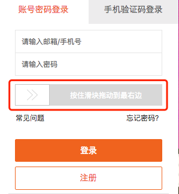

在GitHub上面google官方是这样介绍Puppeteer的
Puppeteer is a Node library which provides a high-level API to control headless Chrome or Chromium over the DevTools Protocol. It can also be configured to use full (non-headless) Chrome or Chromium.
它是一个nodejs的API库，我们可以用它来操作一个浏览器，headless模式就是在内存里运行，不用启动界面，因为我们将它交给代码来控制。下面来说说我实际使用puppeteer的例子
网页截图
这个功能可以说是一个特色功能了，虽然已经有phantomjs这种，但是实际的出图效果和肉眼看到的效果相差甚远，当然只是在一些css3样式下面会有这种情况，可能是编译的版本比较旧吧。前几日在逛掘金的时候看到有人发帖介绍这个puppeteer，重点介绍了截图的功能。突然想到公司项目里“截长图”这个万年难题，总是有这样那样的样式问题。于是我抽出了点时间照着Demo做了一份出来试试我们出问题的样式在它下面的截图效果。效果真的是非常非常好。下面是从安装到截图的步骤
首先在项目里安装puppeteer
1 | npm install puppeteer --ignore-scripts |
这里的--ignore-scripts是为了忽略包里的安装命令，因为这个命令要下载chrome，但是通常都无法下载，需要手动下载。
使用这个命令安装好后我们就需要手动去下载chrome了，找到node_modules/puppeteer/utils/ChromiumDownloader.js第95行（可能会因为代码更新有所变动）找到
1 | url = util.format(url, downloadHost, revision) |
在下面输出url（console.log(url)），再去到puppeteer目录里，运行
1 | node install.js |
得到输出的地址，然后再用下载工具下载。之后上传到一个支持https的云端上面，如七牛，反正能够通过https直接访问到资源就行了，再将这个链接重新赋值给url这个变量保存后再运行一次node install.js这样chrome就装好了然后我们就可以写代码了，下面是最简单的例子
1 | const puppeteer = require('puppeteer'); |
几乎所有的api都返回一个Promise，为了不陷入无穷无尽的回调，我们在这里选择async/await语法，所以需要较新的nodejs版本。当然，实际使用中是不会这么简单的，比如我们截图截的是长图，并且需要将文件直接返回出去，所以我们可以不用保存文件到本地，查看文档后知道screenshot方法返回的是一个Promiseexpress可以这样（当然为了易于维护和扩展，代码肯定不会这么写）
1 | const app = require( 'express' )() |
其实这里可以优化一下，我们都知道启动一个程序是很耗时的，我们可以在nodejs服务启动的时候就把浏览器启动起来，当截图请求发起的时候再去打开一个标签页，再截图，完成后再关闭标签页就能节约很多时间。
还有很多细节的问题这里就不再赘述了，比如截图的质量，截图的文件类型png/jpg，等待图片全部加载完成再发起截图，关于截图这一块官方提供了好几个参数来控制，感兴趣的可以看官方的文档puppeteer
浏览器操控
这算是它的核心功能了，如果要模拟一个用户的行为去访问一个网页，肯定少不了交互，鼠标、键盘和触摸等等，这些puppeteer全都可以做到，举个简单的例子，有些数据必须要鼠标点击、拖动、滚轮滚动才会产生，这个时候用一些后端语言是无法模拟的，这个时候就需要调用api去操控浏览器来完成操作。
实际需求：使用后端程序登陆一个网站后去访问一些接口，但是登陆的时候有一个验证，需要用户使用鼠标拉动一个滑块到最后再释放鼠标生成登陆票据才能验证通过，像这样

这种使用纯代码是很难验证通过的，但是使用一个浏览器环境的话就简单多了，于是我们想到使用nodejs作为服务来专门获取用于登陆的参数，下面是用来模拟用户滑动滑块的代码
1 | const puppeteer = require('puppeteer'); |
此时我们就能完成滑动验证以生成用于登录的票据，再取出来返回出去，调用者就可以使用这个票据来模拟用户登录了。
这里的step非常重要，尽量以两次移动的x坐标的差值来设定它，因为这个滑动组件就是这样来判断是否是用户行为的（当然有了puppeteer我们连真人都可以伪装了），如果不设置step，虽然一样可以将滑块滑过去，但是是无法验证成功。
还有个很重要的api忘了介绍，就是page下面的evaluate方法，参数是Function或者String，函数或者字符串会被传递到chrome里面执行，再将结果返回出去，这样我们就可以取得页面上或者js里面的值了。
到最后其实我发现了它的一个bug，最后输出的图片会在垂直方向的第16000像素多一点的地方开始断掉并从网页最头部开始重复，这让人有点懊恼，尝试了一些办法都没有解决，无奈提了issue，希望官方能够解决，